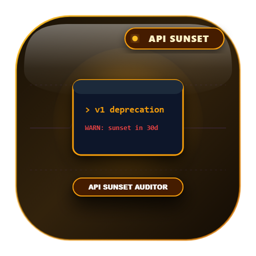

API SDK Deprecation Radar
🟢 Live Public🎁 1,600+ Free/Mo
Enterprise zero-proxy data extraction tool and MCP server for API SDK Deprecation Radar.
Category: Cloud Health & SRE | Keywords: rfc 8594 sunset deprecation header monitor, api lifecycle radar, sdk breaking changes